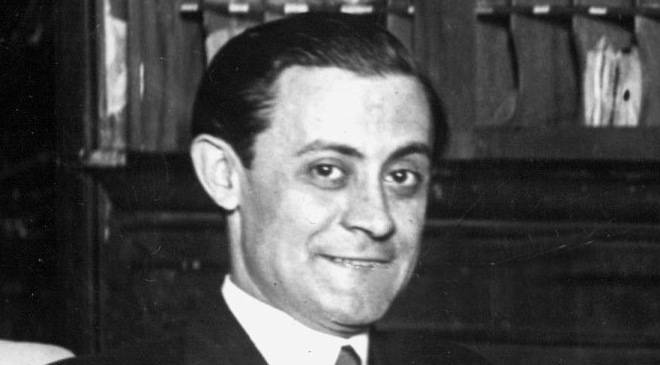
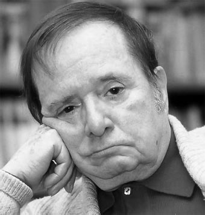

Teatro del 36 hasta el 75
Teatro de renovación o disparate
Con propuestas de un humor nuevo,disparatado y poético, poco comprendido por el público, que siguió cultivándose durante la primera posguerra. Sus principales representantes son los dramaturgos Enrique Jardiel Poncela (1901-1952) y Miguel Mihura (1905-1977), en cuyas obras encontramos un humor absurdo, de raíz vanguardista, ajeno a la realidad de la época.
Enrique Jardiel Poncela

En las obras del también madrileño anteriores a la Guerra Civil –Usted tienen ojos de mujer fatal (1932), Las cinco advertencias de Satanás (1935), Cuatro corazones con freno y marcha atrás (1936)- se aprecian ya las características de su propuesta teatral, que presenta tres diferencias fundamentales con respecto al teatro cómico de Arniches (casticismo madrileño), los Quintero (casticismo andaluz) o Muñoz Seca:
- Sucesos inverosímiles o fantásticos.
- Humor inteligente basado en la agudeza verbal y las situaciones insólitas.
- Desaparición de elementos castizos<7li>
Su adhesión al régimen le hace persona non grata en América del Sur debido a los exiliados.
Uno de los grandes renovadores del teatro de humor, frente al costumbrista y sentimental. Experimenta lo inverosímil, lo fantástico y lo absurdo, bajo tesis vanguardistas. Imaginativo y deslumbrante, es criticado por el apresuramiento de los desenlaces y la explicación verosímil final.
Miguel Mihura

Fundador de la revista cómica La codorniz entre 1941-1944, el madrileño Miguel Mihura es el autor de la
extraordinaria obra Tres sombreros de copa (1932), obra fundacional de la comedia del disparate fue escrita en 1932,
pero no se estrenó hasta 1952, veinte años después.
ARGUMENTO:un hombre llega a un hotel la noche antes de casarse y allí conoce a una mujer de una compañía itinerante de la cual se enamora, aunque al final de la noche, aun habiendo descubierto un nuevo mundo, vuelve a su vida despidiéndose de su nuevo amor.
El autor usa lo siguiente para crear humor:
- Acumulación de objetos inútiles
- Juegos con el lenguaje
- Encadenamiento de situaciones disparatados
De estructura clásica: tres actos correspondientes al planteamiento, nudo y desenlace y escrupuloso respeto a la regla de las tres unidades –espacio, tiempo y acción. La trasgresión viene del humor disparatado y absurdo, vanguardista, con gran carga de rebeldía moral y estética.
Abordaremos ahora el teatro del exilio.